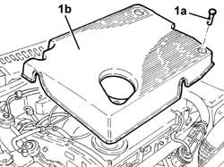
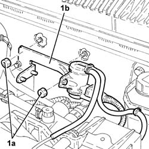
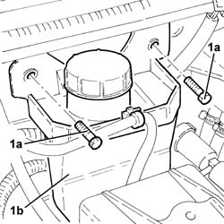
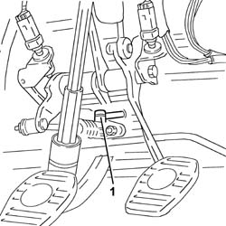
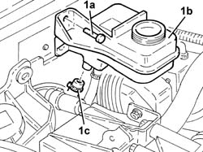

1820B39 hose from clutch reservoir to master cylinder - r r for right han d drive versions
- Path
- Procedures > 18 CLUTCH > 1820 CLUTCH RELEASE CONTROLS > 1820B HYDRAULIC CLUTCH SYSTEM > 1820B39 hose from clutch reservoir to master cylinder - r r for right han d drive versions
- Kind
- repair procedure (removal / refitting; the operation number is the code)
- Applies to
- engines: 2.4 JTD 10v; all production periods
- Interactive page
- https://sloeber94.github.io/elrnDB-a156/en/#/3237913
Applies to: engines: 2.4 JTD 10v; all production periods; only with equipment: Right hand drive
 Removing
Removing
 Refitting
Refitting1. Undo the bolts (1a) and remove the soundproof cover (1b).

Applies to: engines: 2.4 JTD 10v; all production periods; only with equipment: Right hand drive
Drain the brake-clutch fluid from the reservoir using a suitable syringe.
1. Undo nut (1a) and move plug preheater control unit and E.G.R modulator valve support bracket (1b) forwards.

Applies to: engines: 2.4 JTD 10v; all production periods; only with equipment: Right hand drive
1. Undo the bolts (1a) and remove the power assisted steering fluid reservoir (1b).

Applies to: engines: 2.4 JTD 10v; all production periods; only with equipment: Right hand drive
1. Disconnect the hose from the clutch reservoir to the master cylinder on the master cylinder side.

Applies to: engines: 2.4 JTD 10v; all production periods; only with equipment: Right hand drive
1. Undo bolts (1a), move the clutch fluid reservoir (1b) enough to disconnect the hose from the clutch reservoir to the master cylinder (1c).

Applies to: engines: 2.4 JTD 10v; all production periods; only with equipment: Right hand drive
Remove the hose from the clutch reservoir to the master cylinder after releasing it from the retaining bands.
Applies to: engines: 2.4 JTD 10v; all production periods; only with equipment: Right hand drive
Refitting
RemovingPlace the hose from the clutch reservoir to the master cylinder back in its housing and secure with the bands.
Connect the hose from the clutch reservoir to the master cylinder, clutch fluid reservoir side.
Place the clutch fluid reservoir back in its housing and secure using the bolts.
Connect the hose from the clutch reservoir to the master cylinder on the master cylinder side.
Place the power assisted steering fluid reservoir back in its housing and fix it using the bolts.
Place the plug preheater control unit and E.G.R modulator valve support bracket back in its housing and secure using the relevant nuts.
Place the soundproof cover back in its housing and secure using the relevant bolts.
1820B08 Clutch release HYDRAULIC SYSTEM - Bleeding air and restoring level Clutch system air bleed.